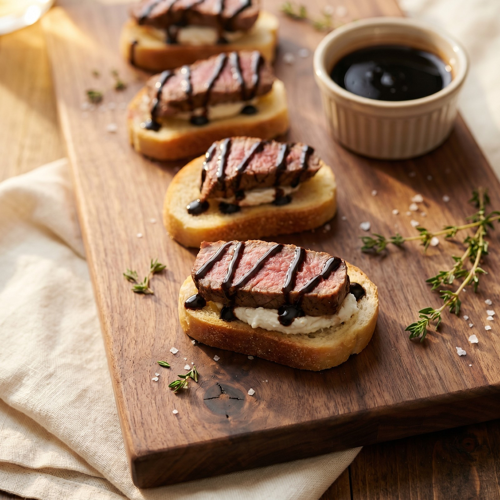

Tender medium-cooked filet mignon, creamy goat cheese, and a sweet-tart balsamic drizzle, all stacked on a crisp toasted slice of Italian bread. An elegant appetizer that comes together in about 30 minutes.
Preheat the oven to 400°F. While it heats, slice the Italian loaf into thin rounds about ⅓-inch thick. Arrange in a single layer on a sheet pan.
Oil the bread. Brush or drizzle each slice with olive oil and add a tiny pinch of salt.
Season the filet. Pat the steak dry with paper towels on all sides — dry meat sears, wet meat steams. Season generously with kosher salt and black pepper.
Slice the goat cheese. Cut the goat cheese log into thin rounds (one per crostini). Set aside.
Tip: a knife dipped in warm water cuts goat cheese cleanly without crumbling. Let the cheese sit out for a few minutes if it's cold from the fridge.
Arrange the crostini on a board or platter and serve immediately while the steak is still warm. Best enjoyed within 15 minutes of assembling so the bread stays crisp and the cheese stays creamy.
The steak climbs to about 140°F while it rests. Going too far makes filet dry.
Look for the direction the muscle fibers run, then slice perpendicular for the most tender bite.
Dip your knife in warm water between cuts and let the cheese sit out for a few minutes so it slices clean.
Slice thinner if you want more crostini per filet — thicker if you want a steakier bite.
Assemble right before serving. The bread stays crisp and the goat cheese softens slightly under the warm steak.